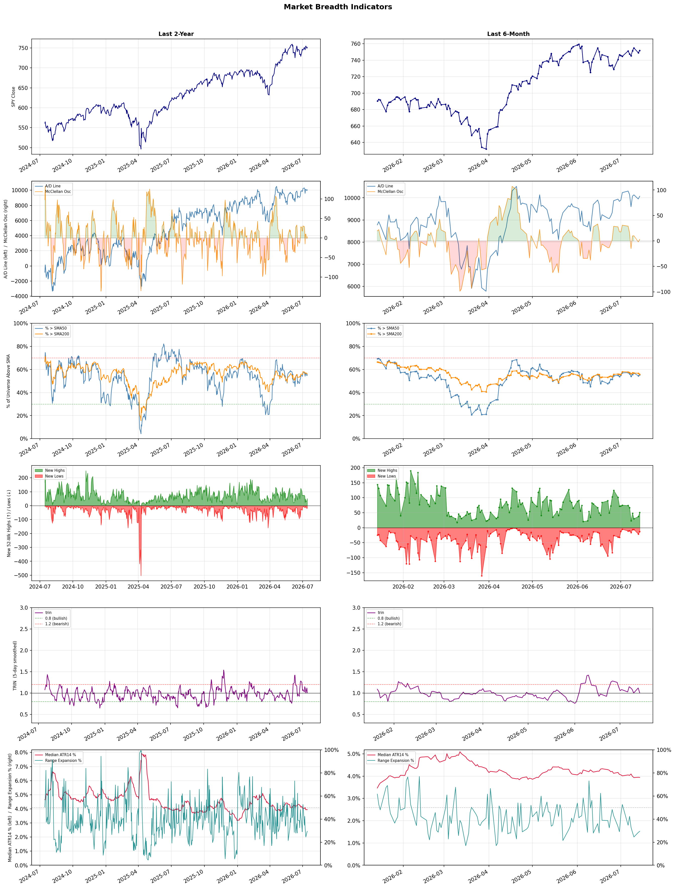

A daily market breadth and sector rotation report for active investors
| Item | Read |
|---|---|
| Regime | Selective Risk-On |
| Risk posture | Selective |
| Universe | 1,340 stocks tracked · 51 new 52-week highs · 30 active swing setups |
| Breadth | 55.3% of tracked stocks are above SMA50 — neutral range, new highs exceed new lows (51 vs 13) |
| Leadership | Healthcare Plans, Diagnostics & Research, and Oil & Gas Refining & Marketing |
| Weakest groups | Other Industrial Metals & Mining, Gold, and Aerospace & Defense |
Use this report to prioritize research and chart review; validate entries, stops, liquidity, earnings, and risk before acting.
| Item | Read |
|---|---|
| Primary read | Selective Risk-On regime with Selective risk posture. |
| Research queue | HUM, OSCR, PGNY, ELV, ALHC |
| Leadership focus | Healthcare Plans, Diagnostics & Research, and Oil & Gas Refining & Marketing |
| Caution list | Other Industrial Metals & Mining, Gold, and Aerospace & Defense |
| Review prompt | Check extension risk, chart location, fundamentals, valuation, and earnings before using any research row. |
| Item | Read |
|---|---|
| Primary read | 0 active risk warnings; use screen output as watchlist input only. |
| Bullish screens | CNC, CVS, ELV, DINO, MPC |
| Bearish screens | ORCL, MRLN |
| Alerts / levels | Automated trigger, stop, ATR, liquidity, reward/risk, and event-risk levels are pending future enrichment. |
| Review prompt | Open the linked chart, define trigger and invalidation, then check liquidity and event risk independently. |
Risk Posture: Selective — screen backdrop supports selective research in leading industries
Metric context: McClellan below -50 = elevated selling pressure; below -100 = washout territory. Range Expansion = share of stocks with daily range above their 20-day average. Signal Density = share of tracked names appearing in signal screens.
| Breadth Date | % > SMA50 | % > SMA200 | New Highs | New Lows | McClellan | Median Range | Avg Range | Median ATR14 | Range Expansion | Signal Density |
|---|---|---|---|---|---|---|---|---|---|---|
| 2026-07-14 | 55.3% | 55.9% | 51 | 13 | 3.2 | 3.1% | 3.7% | 3.9% | 29.4% | 6.4% |

Prior comparison date: July 13, 2026
| Metric | Prior | Current | Change |
|---|---|---|---|
| Regime | Selective Risk-On | Selective Risk-On | unchanged |
| Risk Posture | Selective | Selective | unchanged |
| % > SMA50 | 54.6% | 55.3% | +0.7 pts |
| % > SMA200 | 56.7% | 55.9% | -0.8 pts |
| New Highs | 36 | 51 | +15 |
| New Lows | 22 | 13 | +9 |
Top-10 industries entering: none. Top-10 industries leaving: none. New multi-signal long setups: CNC, DINO, EIX, ELV, FE, GNW, HR, MPC, MRVI. New multi-signal short setups: MRLN.
| Status | Tickers | Read |
|---|---|---|
| Added | AAL, ABCL, CNC, DINO, EIX, ELV, FE, GNW | New technical screen matches vs prior report. |
| Removed | ACHR, ALHC, ALL, CPRT, DHR, EOSE, ES, KO | No longer present in today's technical screen matches. |
| Still Active | BNS, CVS, D, ITW, JBLU, MFG, MUFG, NUVL | Appeared in both current and prior reports. |
| Promoted | none | Model Screen Score improved by at least 15 points. |
| Downgraded | WRB | Model Screen Score declined by at least 15 points. |
| Direction | Industry | ETF | Prior Rank | Current Rank | Days | Rank Change |
|---|---|---|---|---|---|---|
| Rose | Oil & Gas Refining & Marketing | CRAK | 84 | 3 | 28 | +81 |
| Rose | Insurance - Property & Casualty | KIE | 79 | 5 | 42 | +74 |
| Rose | Household & Personal Products | XLP | 95 | 25 | 42 | +70 |
| Rose | Insurance Brokers | N/A | 86 | 20 | 42 | +66 |
| Rose | Software - Application | IGV | 79 | 18 | 28 | +61 |
Bull: The Oil & Gas Refining & Marketing sector is experiencing rising relative strength primarily due to a combination of improving market sentiment and strong stock performance among key players, as evidenced by Marathon Petroleum's impressive 52% rally over the past six months and PBF Energy's 6.1% jump amid a sector-wide rally. Additionally, the potential for de-escalation in the Middle East, as highlighted in recent headlines, could alleviate supply risks and bolster demand, making oil refiners more attractive to investors. The sector's recent performance, with the Oil Refiners ETF (CRAK) hitting a new 52-week high, further underscores the growing confidence in this industry.
Bear: While the recent rally in the Oil & Gas Refining & Marketing sector may seem promising, it is crucial to consider the underlying demand concerns that could undermine this momentum. The headlines indicate a potential slip in oil prices due to demand woes, which could negatively impact refining margins and profitability. Additionally, the optimism surrounding Middle East de-escalation may be overblown, as geopolitical tensions can quickly resurface, leading to volatility in supply and prices that could ultimately hurt refiners like Marathon Petroleum and PBF Energy.
Verdict: The Oil & Gas Refining & Marketing sector is experiencing a rise in relative strength driven by improving market sentiment, strong stock performances from key players, and potential easing of geopolitical tensions in the Middle East, which could enhance supply stability and demand. However, investors should remain cautious of underlying demand concerns and the risk of geopolitical volatility that could quickly reverse these gains and impact refining margins. It is advisable to monitor oil price trends closely and consider the potential for a pullback in stock valuations if demand issues materialize.
Sources: Yahoo Finance, Google News
Bull: The Property & Casualty insurance sector is experiencing rising relative strength due to a combination of digitalization advancements and increased exposure growth, as highlighted in recent articles discussing the industry's positive outlook and specific stock recommendations. The ongoing trend of digital transformation is enhancing operational efficiencies and customer engagement, while the broader economic recovery is likely driving demand for insurance products, positioning firms like Globe Life and Aon favorably in the market. Additionally, the recognition of top-performing insurers in Q1, such as Assured Guaranty and MGIC Investment, underscores a bullish sentiment surrounding the sector's growth potential.
Bear: While the bull thesis highlights digitalization and economic recovery as key drivers for the Property & Casualty insurance sector, it overlooks significant headwinds such as rising inflation and increasing claims costs, which can erode profit margins. Additionally, the competitive landscape is intensifying, with new entrants leveraging technology to disrupt traditional models, potentially leading to pricing pressures and reduced market share for established players like Globe Life and Aon. This combination of factors raises concerns about the sustainability of the current bullish sentiment in the sector.
Verdict: The Property & Casualty insurance sector is likely experiencing upward momentum due to advancements in digitalization that enhance operational efficiencies and customer engagement, coupled with a recovering economy that boosts demand for insurance products. However, the key risk lies in rising inflation and increasing claims costs, which could significantly squeeze profit margins and challenge the sustainability of growth for established players like Globe Life and Aon. Investors should remain vigilant about these headwinds while considering opportunities in firms that effectively navigate this evolving landscape.
Sources: Yahoo Finance, Google News
Bull: The Household & Personal Products sector is likely experiencing rising relative strength due to its defensive nature in uncertain economic conditions, as highlighted by the mixed performance of consumer stocks in recent trading sessions. The positive outlook from analysts, such as the mention of "Best Consumer Staples Stocks to Buy in 2026" by The Motley Fool, suggests that investors are increasingly favoring stable, essential products amid market volatility. Additionally, the review of key players like Procter & Gamble and Kimberly-Clark indicates a focus on strong fundamentals and brand resilience, further supporting the sector's attractiveness compared to more cyclical industries.
Bear: While the defensive nature of the Household & Personal Products sector may provide some stability, the recent mixed performance of consumer stocks suggests underlying weakness and uncertainty among consumers. Rising inflation and potential economic slowdown could lead to reduced discretionary spending, impacting sales for even essential products. Additionally, the focus on "best stocks to buy" may reflect a search for safety rather than genuine growth prospects, indicating that investors are more concerned about preserving capital than capitalizing on robust opportunities.
Verdict: The Household & Personal Products sector is gaining relative strength as investors seek stability in essential goods amid economic uncertainty, bolstered by strong fundamentals from key players like Procter & Gamble and Kimberly-Clark. However, the key risk lies in rising inflation and a potential economic slowdown, which could dampen consumer spending even on essential products, making it crucial for investors to monitor economic indicators closely. To capitalize on this trend, consider focusing on companies with strong brand loyalty and pricing power to navigate potential headwinds.
Sources: Yahoo Finance, Google News
Bull: The Insurance Brokers sector is likely experiencing rising relative strength due to strong earnings reports, such as Ryan Specialty's impressive performance in Q1, which indicates robust demand and operational efficiency within the industry. Additionally, the potential for mergers and acquisitions, as highlighted by Yahoo Finance, suggests a consolidation trend that could enhance profitability and market positioning for leading firms, further bolstering investor confidence despite temporary disruptions from AI-related fears.
Bear: While the recent earnings reports, such as Ryan Specialty's, may appear strong, they do not account for the broader industry risks posed by the rapid advancements in AI technology, which threaten to disrupt traditional brokerage models and reduce margins. Furthermore, the enthusiasm surrounding potential M&A activity could be overblown, as consolidation often leads to regulatory scrutiny and integration challenges that can hinder growth rather than enhance it. Overall, the rising relative strength may be more reflective of short-term market sentiment rather than sustainable fundamentals, making the sector vulnerable to significant corrections.
Verdict: The Insurance Brokers sector is experiencing rising relative strength primarily due to strong earnings reports, such as Ryan Specialty's Q1 performance, which reflect robust demand and operational efficiency. However, investors should remain cautious of the key risk posed by rapid advancements in AI technology, which could disrupt traditional brokerage models and compress margins, potentially undermining the sector's long-term growth prospects. It is advisable to closely monitor developments in AI and regulatory responses to M&A activity as indicators of future market stability.
Sources: Google News
Bull: The Software - Application sector is likely rising in relative strength due to its resilience amid broader market volatility, as evidenced by the recent sell-offs in major players like IBM and Oracle, which may be perceived as overreactions rather than indicative of the sector's overall health. Additionally, the increasing interest in AI technologies, highlighted by articles from Morningstar and The Motley Fool, suggests that investors are recognizing the long-term growth potential of software applications that leverage AI, positioning the sector favorably against macroeconomic uncertainties.
Bear: While the bull thesis emphasizes resilience and the long-term potential of AI, the recent dramatic sell-offs in major software stocks like IBM and Oracle signal underlying vulnerabilities within the sector that could be exacerbated by macroeconomic pressures. The narrative of AI-driven growth may overlook the reality that many companies are struggling with profitability, and the heightened geopolitical tensions, particularly the US-Iran conflict, could further dampen investor sentiment and spending in the tech sector, leading to a more profound correction rather than a recovery.
Verdict: The Software - Application sector is experiencing a rise in relative strength due to its resilience amid market volatility and increasing investor interest in AI technologies, which are seen as drivers of long-term growth. However, the key risk highlighted by the bear case is the potential for underlying vulnerabilities, particularly in profitability and the impact of geopolitical tensions, which could lead to further corrections in the sector. Investors should remain cautious and consider the broader economic landscape when evaluating opportunities in this space.
Sources: Yahoo Finance, Google News
| Direction | Industry | ETF | Prior Rank | Current Rank | Days | Rank Change |
|---|---|---|---|---|---|---|
| Fell | Copper | COPX | 7 | 82 | 42 | -75 |
| Fell | Other Industrial Metals & Mining | N/A | 14 | 88 | 42 | -74 |
| Fell | Aerospace & Defense | ITA | 18 | 86 | 42 | -68 |
| Fell | Steel | SLX | 8 | 73 | 42 | -65 |
| Fell | Solar | TAN | 3 | 65 | 42 | -62 |
Bear: While the bull analyst attributes the falling relative strength of COPX to concerns over global manufacturing and a shift toward alternative investments, it is crucial to recognize that the copper market is also facing significant headwinds from potential oversupply and geopolitical risks that could further dampen demand. Additionally, the narrative around copper as a key player in the electrification and AI boom may be overstated, as the actual realization of these benefits is contingent on broader economic stability and infrastructure investments, which remain uncertain in the current climate.
Bull: Copper's relative strength is likely falling due to concerns over global manufacturing weakness, as highlighted in the headline "If Global Manufacturing Weakens, Here’s What Happens to This Copper ETF." Additionally, the competitive landscape between copper miners and futures, as discussed in "COPX vs. CPER," may be causing investors to reassess their positions, particularly as the focus shifts toward alternative investments like AI and technology, which are gaining traction in the current market environment. This shift in investor sentiment could be contributing to the relative underperformance of copper compared to other industries.
Verdict: The falling trend in the copper industry is primarily driven by concerns over global manufacturing weakness, leading to diminished demand forecasts and a shift in investor focus toward alternative sectors like AI and technology. However, a key risk to consider is the potential for oversupply in the copper market, alongside geopolitical uncertainties that could further suppress demand and hinder the anticipated benefits from electrification and infrastructure investments. Investors should remain cautious and closely monitor these macroeconomic factors before making significant positions in copper-related assets.
Sources: Yahoo Finance, Google News
Bear: While the bull analyst highlights technological advancements and potential undervaluation as reasons for optimism, the persistent relative weakness in the Other Industrial Metals & Mining sector suggests deeper structural issues. Specifically, the sector faces significant headwinds from declining demand due to economic slowdowns in key markets, rising production costs, and increased regulatory pressures, which could hinder profitability and growth. Furthermore, as investors flock to more promising sub-sectors, the Other Industrial Metals & Mining sector risks being further marginalized, leading to a potential lack of capital and innovation that could stifle recovery.
Bull: The relative weakness of the Other Industrial Metals & Mining sector can be attributed to a combination of macroeconomic factors and competitive pressures highlighted in recent headlines. Specifically, the focus on AI and technological advancements in mining, as noted in the Boston Consulting Group article, suggests that companies not adapting to these innovations may lag behind. Additionally, the emphasis on top stock picks in the red-hot metals sector by BofA indicates that investor attention is shifting towards more promising sub-sectors or companies, potentially leaving the Other Industrial Metals & Mining sector undervalued and overlooked.
Verdict: The Other Industrial Metals & Mining sector is likely experiencing a downturn due to a combination of declining demand in key markets and rising production costs, which are exacerbated by increased regulatory pressures. The key risk from the bear case is that, as investors shift their focus to more promising sub-sectors, the Other Industrial Metals & Mining sector may face a lack of capital and innovation, further entrenching its relative weakness and hindering any potential recovery. Investors should closely monitor macroeconomic indicators and sector-specific developments to gauge the sustainability of this trend.
Sources: Google News
Bear: While the bull analyst highlights potential long-term benefits from increased defense spending, the immediate reality is that many defense stocks have not seen corresponding earnings growth, as evidenced by the mixed performance and recent declines, such as Mercury Systems' 6.5% drop. Furthermore, the market's cautious sentiment may reflect concerns about the sustainability of this spending surge in light of potential economic headwinds, including inflation and budget constraints, which could hinder the expected rearmament cycle and lead to further volatility in the sector.
Bull: The Aerospace & Defense sector is experiencing a decline in relative strength primarily due to short-term market reactions to geopolitical tensions, such as the Iran conflict, which have not translated into immediate earnings boosts for defense stocks, as noted in the Barron's headline. Additionally, while there is a strong macro trend of increased government spending on defense, as highlighted by NATO's commitment to 5% of GDP on defense by 2035, the market may be in a cautious phase, awaiting clearer indications of how these spending commitments will impact earnings in the near term, leading to sector-wide volatility exemplified by the drop in Mercury Systems' stock.
Verdict: The Aerospace & Defense sector is currently experiencing a decline due to a disconnect between heightened government spending commitments and the lack of immediate earnings growth, as seen in recent stock performance like Mercury Systems' 6.5% drop. The key risk is that economic headwinds, such as inflation and budget constraints, may undermine the sustainability of increased defense spending, leading to further volatility and uncertainty in the sector. Investors should closely monitor earnings reports and macroeconomic indicators to gauge the potential for recovery or continued decline.
Sources: Yahoo Finance, Google News
Bear: While the bull analyst highlights recent gains and legislative support for steelmakers, the underlying fundamentals of the steel industry remain concerning. The rising interest in alternative materials, such as nickel and platinum, coupled with the potential for technological advancements in AI that may reduce demand for traditional steel applications, suggests that the current highs in SLX may be unsustainable. Furthermore, the falling relative strength trend indicates that the steel sector could be losing its competitive edge, making it vulnerable to broader market shifts and capital reallocations away from steel investments.
Bull: The steel industry, represented by the VanEck Steel ETF (SLX), is experiencing a relative strength decline primarily due to broader market dynamics and competition from other sectors, as indicated by the headlines discussing the performance of steel stocks compared to other industries. Despite recent gains, including SLX reaching new 52-week highs and positive sentiment from legislative support for steelmakers, the ongoing focus on alternative materials and sectors, such as nickel and platinum, suggests that investor interest is being diverted away from steel. Additionally, the mention of AI's impact on various sectors highlights a shift in capital allocation, which may further contribute to the steel industry's relative underperformance.
Verdict: The steel industry's recent decline can be attributed to shifting investor interest towards alternative materials and sectors, particularly in light of technological advancements like AI that may reduce traditional steel demand. The key risk lies in the potential for sustained underperformance as capital reallocates away from steel, driven by the industry's declining relative strength and competition from emerging materials such as nickel and platinum. Investors should closely monitor these trends and consider reallocating investments to sectors demonstrating stronger growth potential.
Sources: Yahoo Finance, Google News
Bear: While the bull analyst highlights regulatory concerns and supply chain issues as primary drivers of the solar sector's relative weakness, it's crucial to recognize that the broader economic environment is also affecting investor sentiment. Rising interest rates and inflationary pressures are leading to increased capital costs, which can disproportionately impact capital-intensive industries like solar. Furthermore, the significant tax burden mentioned suggests that potential investors may be deterred, compounding the sector's struggles despite isolated bullish sentiment surrounding individual stocks.
Bull: The solar industry, represented by the TAN ETF, is experiencing a decline in relative strength primarily due to concerns over regulatory changes and potential export limitations from China, which could disrupt supply chains and impact pricing dynamics. Additionally, despite recent upgrades and bullish notes from analysts on individual stocks like First Solar and Enphase, the market sentiment appears cautious, as evidenced by the mixed reactions to positive earnings reports and the mention of a significant tax burden on solar investments, which may deter new capital inflows. This combination of regulatory uncertainty and market skepticism is contributing to the sector's relative weakness compared to other industries.
Verdict: The solar industry is facing a decline primarily due to regulatory uncertainties and potential supply chain disruptions stemming from export limitations from China, which are exacerbated by rising interest rates and inflation that increase capital costs. The key risk highlighted by the bear case is that these macroeconomic pressures, coupled with a significant tax burden on solar investments, may deter new capital inflows and hinder growth prospects for the sector. Investors should remain cautious and consider these broader economic factors when evaluating opportunities in the solar space.
Sources: Yahoo Finance, Google News
| Industry | Rank | ETF | 7d | 14d | 28d | 42d | Chg 42d | Size | 20D | 60D | Composite | Active Setups |
|---|---|---|---|---|---|---|---|---|---|---|---|---|
| Healthcare Plans | 1 | IHF | 1 | 3 | 3 | 13 | +12 | 10 | 6.9% | 60.1% | 0.949 | 2 |
| Diagnostics & Research | 2 | N/A | 4 | 4 | 11 | 26 | +24 | 16 | 16.0% | 34.9% | 0.930 | 1 |
| Oil & Gas Refining & Marketing | 3 | CRAK | 28 | 60 | 84 | 58 | +55 | 7 | 20.3% | 19.1% | 0.919 | 0 |
| Health Information Services | 4 | N/A | 7 | 22 | 17 | 28 | +24 | 12 | 19.4% | 29.8% | 0.904 | 0 |
| Insurance - Property & Casualty | 5 | KIE | 5 | 10 | 45 | 79 | +74 | 8 | 13.6% | 16.9% | 0.883 | 1 |
| Biotechnology | 6 | XBI | 2 | 5 | 34 | 51 | +45 | 93 | 16.2% | 21.0% | 0.879 | 1 |
| Advertising Agencies | 7 | N/A | 8 | 14 | 10 | 44 | +37 | 7 | 9.4% | 38.7% | 0.867 | 0 |
| Banks - Diversified | 8 | N/A | 9 | 12 | 9 | 20 | +12 | 16 | 6.6% | 14.9% | 0.860 | 0 |
| Airlines | 9 | N/A | 3 | 2 | 7 | 17 | +8 | 8 | 3.8% | 21.0% | 0.832 | 1 |
| Medical Care Facilities | 10 | IHF | 6 | 11 | 48 | 60 | +50 | 9 | 11.6% | 19.9% | 0.817 | 0 |
Rank columns (7d–42d) show the industry's rank that many trading days ago — lower is stronger. Chg 42d = rank change vs 42 trading days ago — positive means the industry moved up. 20D and 60D are the mean stock return within the industry over that period. Active Setups: count of today's swing-trade candidates from this industry appearing across all signal screens.
| Industry | Rank | ETF | 7d | 14d | 28d | 42d | Chg 42d | Size | 20D | 60D | Composite | Active Setups |
|---|---|---|---|---|---|---|---|---|---|---|---|---|
| Other Industrial Metals & Mining | 88 | N/A | 86 | 81 | 37 | 14 | -74 | 21 | -17.1% | -19.3% | 0.064 | 0 |
| Gold | 87 | GDX | 85 | 88 | 76 | 66 | -21 | 27 | -8.5% | -25.6% | 0.090 | 0 |
| Aerospace & Defense | 86 | ITA | 79 | 73 | 68 | 18 | -68 | 26 | -13.4% | -19.5% | 0.110 | 0 |
| Uranium | 85 | URA | 88 | 87 | 80 | 42 | -43 | 6 | -7.2% | -26.0% | 0.119 | 0 |
| Chemicals | 84 | N/A | 84 | 85 | 81 | 64 | -20 | 8 | -15.4% | -19.4% | 0.124 | 0 |
| Utilities - Renewable | 83 | N/A | 83 | 59 | 58 | N/A | N/A | 7 | -14.8% | -9.6% | 0.137 | 0 |
| Copper | 82 | COPX | 87 | 80 | 14 | 7 | -75 | 6 | -9.2% | -11.3% | 0.180 | 0 |
| Auto Manufacturers | 81 | N/A | 75 | 78 | 85 | 38 | -43 | 10 | -5.6% | -12.5% | 0.205 | 0 |
| Telecom Services | 80 | N/A | 74 | 77 | 75 | 55 | -25 | 19 | -8.2% | -12.9% | 0.239 | 0 |
| Specialty Chemicals | 79 | N/A | 63 | 46 | 43 | 43 | -36 | 17 | -9.7% | -9.4% | 0.249 | 0 |
Rank columns (7d–42d) show the industry's rank that many trading days ago — lower is stronger. Chg 42d = rank change vs 42 trading days ago — positive means the industry moved up. 20D and 60D are the mean stock return within the industry over that period. Active Setups: count of today's swing-trade candidates from this industry appearing across all signal screens.
These are research candidates from top-ranked stocks, capped at five names per industry to avoid over-concentration. Returns shown (60D, 120D, 250D) are historical — they reflect where prices have already moved, not forward expectations. Extension Risk flags names that may require extra patience or a better entry point. They are not buy signals.
Chart: TV = TradingView chart (opens in browser); PDF = local chart file (if downloaded).
| Ticker | Name | Industry | Industry Rank | Market Cap | 60D Hist | 120D Hist | 250D Hist | Extension Risk | Research Reason | Chart |
|---|---|---|---|---|---|---|---|---|---|---|
| HUM | Humana | Healthcare Plans | 1 | N/A | 102.6% | 51.8% | 83.3% | Very extended | Top-ranked in industry; very extended | TV |
| OSCR | Oscar Health | Healthcare Plans | 1 | N/A | 98.8% | 95.2% | 108.2% | Extended | Top-ranked in industry; extended | TV |
| PGNY | Progyny | Healthcare Plans | 1 | N/A | 80.5% | 27.5% | 39.2% | Extended | Top-ranked in industry; extended | TV |
| ELV | Elevance Health | Healthcare Plans | 1 | N/A | 35.1% | 16.3% | 26.9% | Constructive | Top-ranked in industry | TV |
| ALHC | Alignment Healthcare | Healthcare Plans | 1 | N/A | 1.8% | -6.8% | 59.9% | Constructive | Top-ranked in industry | TV |
| PSNL | Personalis | Diagnostics & Research | 2 | N/A | 125.7% | 60.1% | 138.2% | Very extended | Top-ranked in industry; very extended | TV |
| GH | Guardant Health | Diagnostics & Research | 2 | N/A | 86.8% | 39.4% | 232.9% | Extended | Top-ranked in industry; extended | TV |
| NEO | NeoGenomics | Diagnostics & Research | 2 | N/A | 74.4% | 12.6% | 106.2% | Extended | Top-ranked in industry; extended | TV |
| TWST | Twist Bioscience | Diagnostics & Research | 2 | N/A | 64.6% | 122.2% | 154.4% | Extended | Top-ranked in industry; extended | TV |
| NTRA | Natera | Diagnostics & Research | 2 | N/A | 39.0% | 16.1% | 82.0% | Constructive | Top-ranked in industry | TV |
| PBF | PBF Energy | Oil & Gas Refining & Marketing | 3 | N/A | 42.8% | 97.8% | 126.4% | Constructive | Top-ranked in industry | TV |
| DINO | HF Sinclair | Oil & Gas Refining & Marketing | 3 | N/A | 38.3% | 72.6% | 87.8% | Constructive | Top-ranked in industry | TV |
| MPC | Marathon Petroleum | Oil & Gas Refining & Marketing | 3 | N/A | 34.1% | 73.5% | 72.8% | Constructive | Top-ranked in industry | TV |
| VLO | Valero Energy | Oil & Gas Refining & Marketing | 3 | N/A | 24.7% | 63.2% | 102.6% | Constructive | Top-ranked in industry | TV |
| UGP | Ultrapar Participacoes | Oil & Gas Refining & Marketing | 3 | N/A | -1.5% | 42.1% | 97.3% | Lagging | Top-ranked in industry; lagging | TV |
| HNGE | Hinge Health | Health Information Services | 4 | N/A | 108.1% | 114.6% | 95.1% | Very extended | Top-ranked in industry; very extended | TV |
| TXG | 10x Genomics | Health Information Services | 4 | N/A | 81.4% | 107.7% | 274.7% | Extended | Top-ranked in industry; extended | TV |
| TDOC | Teladoc Health | Health Information Services | 4 | N/A | 59.3% | 52.7% | 17.2% | Extended | Top-ranked in industry; extended | TV |
| CERT | Certara | Health Information Services | 4 | N/A | 8.3% | -29.7% | -35.9% | Constructive | Top-ranked in industry | TV |
| TEM | Tempus AI | Health Information Services | 4 | N/A | 7.8% | -12.1% | 5.0% | Constructive | Top-ranked in industry | TV |
These are technical screen matches from existing signal files. They are not trade recommendations. Trigger, stop, ATR, liquidity, reward/risk, and event risk still require separate validation until those inputs are available.
Model Screen Score is weighted by signal count, industry rank, freshness, and setup type. It is not a probability of profit, expected return, or suitability rating. Industry cap: max 3 candidates per industry.
Signal glossary: Momentum Pullback = stock in an uptrend that has pulled back 10–30% and shows re-entry conditions. MA Compression = short- and long-term moving averages converging, often preceding a directional move. Three-Day Up/Down = three consecutive closes in the same direction. New 52Wk High/Low = price reached a new annual extreme.
Chart: TV = TradingView chart (opens in browser); PDF = local chart file (if downloaded).
| Ticker | Industry | Setups | Close | Industry Rank | Signal Count | Model Screen Score | Reason | Chart |
|---|---|---|---|---|---|---|---|---|
| CNC | Healthcare Plans | New 52Wk High; Three-Day Up | 68.72 | 1 | 2 | 100 | Multi-signal; top industry breakout | TV |
| CVS | Healthcare Plans | New 52Wk High; Three-Day Up | 106.18 | 1 | 2 | 100 | Multi-signal; top industry breakout | TV |
| ELV | Healthcare Plans | New 52Wk High; Three-Day Up | 426.79 | 1 | 2 | 100 | Multi-signal; top industry breakout | TV |
| DINO | Oil & Gas Refining & Marketing | New 52Wk High; Three-Day Up | 83.11 | 3 | 2 | 100 | Multi-signal; top industry breakout | TV |
| MPC | Oil & Gas Refining & Marketing | New 52Wk High; Three-Day Up | 303.40 | 3 | 2 | 100 | Multi-signal; top industry breakout | TV |
| PBF | Oil & Gas Refining & Marketing | New 52Wk High; Three-Day Up | 60.89 | 3 | 2 | 100 | Multi-signal; top industry breakout | TV |
| MRVI | Biotechnology | New 52Wk High; Three-Day Up | 6.51 | 6 | 2 | 93 | Multi-signal; top industry breakout | TV |
| NUVL | Biotechnology | New 52Wk High; Three-Day Up | 123.96 | 6 | 2 | 93 | Multi-signal; top industry breakout | TV |
| BNS | Banks - Diversified | New 52Wk High; Three-Day Up | 88.99 | 8 | 2 | 85 | Multi-signal; top industry breakout | TV |
| MUFG | Banks - Diversified | New 52Wk High; Three-Day Up | 22.50 | 8 | 2 | 85 | Multi-signal; top industry breakout | TV |
| SMFG | Banks - Diversified | New 52Wk High; Three-Day Up | 26.26 | 8 | 2 | 85 | Multi-signal; top industry breakout | TV |
| GNW | Insurance - Life | New 52Wk High; Three-Day Up | 9.71 | 14 | 2 | 85 | Multi-signal; new-high strength | TV |
| MFG | Banks - Regional | New 52Wk High; Three-Day Up | 10.57 | 16 | 2 | 77 | Multi-signal; new-high strength | TV |
| HR | REIT - Healthcare Facilities | New 52Wk High; Three-Day Up | 20.89 | 17 | 2 | 77 | Multi-signal; new-high strength | TV |
| PBA | Oil & Gas Midstream | New 52Wk High; Three-Day Up | 49.99 | 19 | 2 | 77 | Multi-signal; new-high strength | TV |
| D | Utilities - Regulated Electric | New 52Wk High; Three-Day Up | 71.30 | 30 | 2 | 70 | Multi-signal; new-high strength | TV |
| EIX | Utilities - Regulated Electric | New 52Wk High; Three-Day Up | 76.58 | 30 | 2 | 70 | Multi-signal; new-high strength | TV |
| FE | Utilities - Regulated Electric | MA Compression; Three-Day Up | 49.23 | 30 | 2 | 65 | Multi-signal; compression setup | TV |
| WTTR | Oil & Gas Equipment & Services | New 52Wk High; Three-Day Up | 20.32 | 58 | 2 | 65 | Multi-signal; new-high strength | TV |
| ITW | Specialty Industrial Machinery | MA Compression; Three-Day Up | 272.28 | 78 | 2 | 50 | Multi-signal; compression setup | TV |
| TWST | Diagnostics & Research | Momentum Pullback | 92.53 | 2 | 1 | 65 | Single-signal; top industry pullback | TV |
| ABCL | Biotechnology | Momentum Pullback | 6.74 | 6 | 1 | 58 | Single-signal; top industry pullback | TV |
| ORI | Insurance - Property & Casualty | MA Compression | 41.39 | 5 | 1 | 53 | Single-signal; top industry setup | TV |
| WRB | Insurance - Property & Casualty | MA Compression | 71.98 | 5 | 1 | 53 | Single-signal; top industry setup | TV |
| AAL | Airlines | Momentum Pullback | 15.67 | 9 | 1 | 50 | Single-signal; top industry pullback | TV |
| JBLU | Airlines | Momentum Pullback | 5.33 | 9 | 1 | 50 | Single-signal; top industry pullback | TV |
| LUV | Airlines | Momentum Pullback | 47.56 | 9 | 1 | 50 | Single-signal; top industry pullback | TV |
| ZETA | Software - Infrastructure | Momentum Pullback | 22.53 | 11 | 1 | 50 | Single-signal; pullback setup | TV |
Bearish setups — stocks making new lows or showing persistent downside patterns. Validate carefully before acting.
| Ticker | Industry | Setups | Close | Industry Rank | Signal Count | Model Screen Score | Reason | Chart |
|---|---|---|---|---|---|---|---|---|
| ORCL | Software - Infrastructure | New 52Wk Low; Three-Day Down | 127.94 | 11 | 2 | 55 | Multi-signal; new-low weakness | TV |
| MRLN | Aerospace & Defense | New 52Wk Low; Three-Day Down | 4.17 | 86 | 2 | 15 | Multi-signal; new-low weakness | TV |
How To Use This Report
| Use | Purpose |
|---|---|
| Market map | Start with breadth, regime, risk warnings, and what changed since the prior report. |
| Industry scan | Use leading, deteriorating, rising, and declining industries to focus research. |
| Research queue | Treat long-term candidates as names for deeper fundamental, valuation, and chart review. |
| Technical review | Treat bullish and bearish screen matches as watchlist inputs that require independent trigger, stop, liquidity, and event-risk checks. |
| Source follow-up | Use chart links and source files to verify raw inputs before relying on any row. |
What This Report Is Not
| Not | Meaning |
|---|---|
| Investment advice | The report does not evaluate personal objectives, risk tolerance, tax situation, account type, or suitability. |
| Buy/sell recommendation | Named tickers are research candidates or screen matches, not recommendations to transact. |
| Price target | The report does not provide fair value estimates, targets, or expected returns. |
| Trade plan | Trigger, stop, sizing, reward/risk, liquidity, and event-risk review remain separate user work. |
| Performance claim | Model Screen Score is not validated historical performance or a forecast of future results. |
| Item | Note |
|---|---|
| Version | Daily Report Methodology v1 |
| Model Screen Score | Screen-fit rank based on signal count, industry rank, freshness, and setup type. |
| Not predictive proof | The score is not expected return, probability of profit, historical validation, or suitability analysis. |
| Industry ranks | Composite industry ranks use existing daily ranking outputs and historical rank columns when available. |
| Research candidates | Long-term rows are research candidates from ranked stocks and leading industries, with historical returns labeled as historical only. |
| Technical matches | Bullish and bearish rows are screen matches requiring independent chart, trigger, stop, liquidity, and event-risk review. |
| Source | Status | Rows | Path |
|---|---|---|---|
| Market breadth | present | 1253 | breadth_20260714.csv |
| Industry composite rankings | present | 88 | all_industry_composite_20260714.csv |
| Top ranked stocks | present | 186 | top_ranked_composite_20260714.csv |
| All ranked stocks | present | 1340 | all_stocks_composite_sorted_20260714.csv |
| Top momentum pullbacks | present | 1491 | top_momentum_pullbacks_20260714.csv |
| MA compression | present | 1491 | ma_compression_stocks_20260714.csv |
| Three-day up/down | present | 115 | three_day_up_down_stocks_20260714.csv |
| New 52-week members | present | 64 | breadth_new_52wk_members_20260714.csv |
This report is generated from automated technical screens and is for informational and research purposes only. It is not investment advice, a solicitation, or a recommendation to buy or sell any security. Past performance is not indicative of future results. You are solely responsible for your own investment decisions. Consult a licensed financial advisor before acting on any information herein.